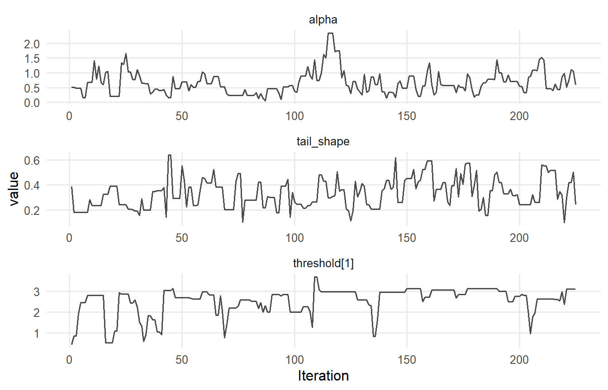
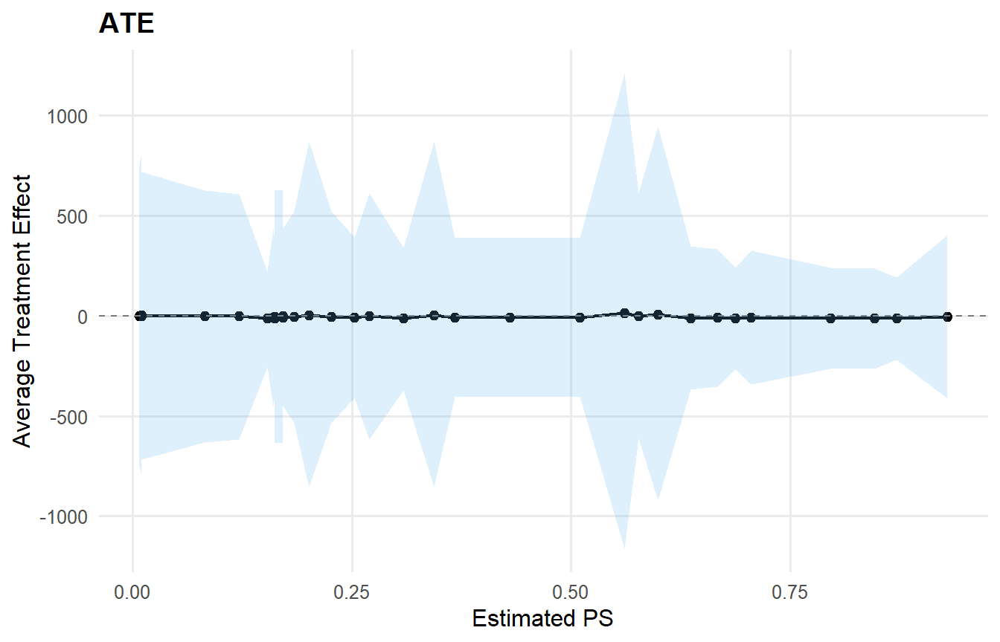
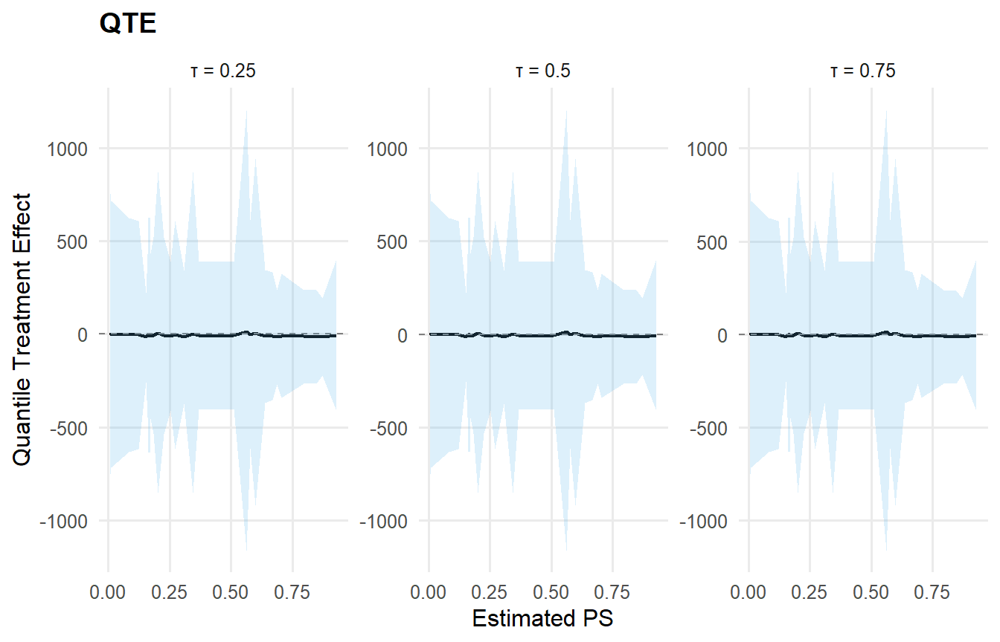

data("mtcars", package = "datasets")
df <- mtcars
y <- df$mpg
X <- df[, c("wt", "hp")]
X <- as.data.frame(X)Model Umbrella: Custom Models (All-in-One)
Overview
This vignette collects two end-to-end examples with customized priors and links:
- Conditional CRP + Amoroso + GPD with covariates, custom links, and tail settings.
- Causal model (two arms) with SB backends: Normal (treated) and Laplace (control), with covariate-linked locations and custom priors.
Both examples use mtcars and show the main user-level functions plus S3 methods (print, summary, plot, predict, fitted, residuals, params, ate, qte).
Note on link priors: both SB and CRP backends currently require normal priors for link-mode regression coefficients. The requested lognormal prior for the scale link is therefore shown below as a non-executed spec block.
Data
Model 1: CRP + Amoroso + GPD (Conditional)
Specification
- Backend: CRP
- Kernel: Amoroso
- Covariates:
wt,hp
- Bulk:
loc: identity link, normal prior on coefficientsscale: identity link, normal prior on coefficients (CRP restriction)shape1: fixed at 1shape2: default prior
- Tail:
threshold: exp link, normal prior on coefficientstail_scale: exp link (default prior)
param_specs_amoroso <- list(
bulk = list(
loc = list(
mode = "link",
link = "identity",
beta_prior = list(dist = "normal", args = list(mean = 0, sd = 2))
),
scale = list(
mode = "link",
link = "identity",
beta_prior = list(dist = "normal", args = list(mean = 0, sd = 2))
),
shape1 = list(mode = "fixed", value = 1)
),
gpd = list(
threshold = list(
mode = "link",
link = "exp",
beta_prior = list(dist = "normal", args = list(mean = 0, sd = 0.2))
),
tail_scale = list(
mode = "link",
link = "exp"
)
)
)# Requested variant (not runnable): link-mode beta priors must be normal
param_specs_amoroso_requested <- list(
bulk = list(
loc = list(
mode = "link",
link = "identity",
beta_prior = list(dist = "normal", args = list(mean = 0, sd = 2))
),
scale = list(
mode = "link",
link = "identity",
beta_prior = list(dist = "lognormal", args = list(meanlog = 0, sdlog = 1))
),
shape1 = list(mode = "fixed", value = 1)
),
gpd = list(
threshold = list(
mode = "link",
link = "exp",
beta_prior = list(dist = "normal", args = list(mean = 0, sd = 0.2))
),
tail_scale = list(
mode = "link",
link = "exp"
)
)
)Build + Run (CRP note)
NIMBLE’s CRP sampler cannot cluster deterministic nodes created by link-mode parameters. As a result, CRP + covariate links are not runnable with the current backend. We still record the requested CRP specification below (for reference), and then run an SB-equivalent model that supports the same customization and lets this vignette compile end-to-end.
# Requested CRP specification (not runnable due to CRP link-mode restriction)
bundle_amoroso_crp <- build_nimble_bundle(
y = y,
X = X,
backend = "crp",
kernel = "amoroso",
GPD = TRUE,
components = 5,
param_specs = param_specs_amoroso,
mcmc = mcmc
)# Runnable SB equivalent (supports link-mode parameters)
bundle_amoroso <- build_nimble_bundle(
y = y,
X = X,
backend = "sb",
kernel = "amoroso",
GPD = TRUE,
components = 5,
param_specs = param_specs_amoroso,
mcmc = mcmc
)
fit_amoroso <- run_mcmc_bundle_manual(bundle_amoroso, show_progress = FALSE)User-Level Functions
print(bundle_amoroso)DPmixGPD bundle Field Value Backend Stick-Breaking Process Kernel Amoroso Distribution Components 5 N 32 X YES (P=2) GPD TRUE Epsilon 0.025
contains : code, constants, data, dimensions, inits, monitors
summary(bundle_amoroso)DPmixGPD bundle summary Field Value Backend Stick-Breaking Process Kernel Amoroso Distribution Components 5 N 32 X YES (P=2) GPD TRUE Epsilon 0.025
Parameter specification block parameter mode level meta backend info model meta kernel info model meta components info model meta N info model meta P info model concentration alpha dist scalar bulk loc link regression bulk scale link regression bulk shape1 fixed component (1:5) bulk shape2 dist component (1:5) gpd threshold link observation (1:N) gpd tail_scale link observation (1:N) gpd tail_shape dist scalar prior link sb
amoroso
5
32
2
gamma(shape=1, rate=1)
beta_loc ~ normal(mean=0, sd=2) identity beta_scale ~ normal(mean=0, sd=2) identity 1
gamma(shape=2, rate=1)
beta_threshold ~ normal(mean=0, sd=0.2) exp beta_tail_scale ~ normal(mean=0, sd=0.5) exp normal(mean=0, sd=0.2)
notes
stochastic concentration
beta_loc is 5 x 2 (components x P)
beta_scale is 5 x 2 (components x P)
iid across components
beta_threshold is length P=2beta_tail_scale is length P=2; tail_scale[i] deterministic
Monitors n = 11 alpha, w[1:5], z[1:32], beta_loc[1:5,1:2], beta_scale[1:5,1:2], shape1[1:5], shape2[1:5], threshold[1:32], beta_threshold[1:2], beta_tail_scale[1:2], tail_shape
print(fit_amoroso)MixGPD fit | backend: Stick-Breaking Process | kernel: Amoroso Distribution | GPD tail: TRUE n = 32 | components = 5 | epsilon = 0.025 MCMC: niter=600, nburnin=150, thin=2, nchains=1 Fit Use summary() for posterior summaries; plot() for diagnostics; predict() for predictions.
summary(fit_amoroso)MixGPD summary | backend: Stick-Breaking Process | kernel: Amoroso Distribution | GPD tail: TRUE | epsilon: 0.025 n = 32 | components = 5 Summary Initial components: 5 | Components after truncation: 1
WAIC: 283.667 lppd: -140.11 | pWAIC: 1.723
Summary table parameter mean sd q0.025 q0.500 q0.975 ess weights[1] 0.84 0.231 0.375 1 1 1.503 alpha 0.664 0.401 0.156 0.576 1.686 35.752 beta_loc[1, 1] -0.193 1.888 -3.805 -0.175 3.23 102.696 beta_loc[2, 1] 0.289 1.868 -2.994 0.201 3.863 118.713 beta_loc[3, 1] 0.271 1.842 -3.089 0.323 3.771 85.32 beta_loc[4, 1] 0.039 2.09 -4.351 0.177 3.373 109.157 beta_loc[5, 1] -0.106 2.062 -3.416 -0.433 4.126 102.538 beta_loc[1, 2] 1.076 1.071 -0.251 0.732 4.041 64.696 beta_loc[2, 2] 0.575 1.966 -3.584 0.831 3.805 65.777 beta_loc[3, 2] 0.165 1.964 -3.446 0.213 3.885 31.383 beta_loc[4, 2] 0.041 1.906 -4.1 0.219 3.286 290.852 beta_loc[5, 2] 0.273 1.999 -4.088 0.202 3.933 94.347 beta_scale[1, 1] 0.432 2.178 -4.026 0.548 4.597 61.237 beta_scale[2, 1] 0.441 1.936 -3.815 0.673 4.394 78.957 beta_scale[3, 1] 0.167 2.149 -4.308 0.062 4.36 86.086 beta_scale[4, 1] 0.172 2.27 -4.557 0.237 4.469 67.492 beta_scale[5, 1] 0.045 1.698 -3.065 -0.087 3.63 102.079 beta_scale[1, 2] 0.67 2.478 -5.403 1.092 4.914 14.091 beta_scale[2, 2] 0.427 2.079 -4.648 0.583 4.672 56.906 beta_scale[3, 2] 0.469 2.004 -3.254 0.326 4.355 50.755 beta_scale[4, 2] 0.287 2.11 -3.448 0.48 4.179 59.57 beta_scale[5, 2] 0.111 2.197 -4.419 -0.073 4.456 72.237 beta_tail_scale[1] 0.97 0.161 0.722 0.947 1.314 5.748 beta_tail_scale[2] -0.003 0.003 -0.009 -0.002 0 2.231 beta_threshold[1] 0.263 0.133 -0.093 0.285 0.552 47.367 beta_threshold[2] 0.002 0.003 -0.004 0.003 0.003 2.671 tail_shape 0.332 0.118 0.157 0.315 0.582 66.661 shape1[1] 1 0 1 1 1 0 shape2[1] 2.463 1.695 0.355 2.047 6.615 48.056
S3 Methods (Fit)
safe_plot(fit_amoroso, family = "traceplot")
pred_mean <- predict(fit_amoroso, x = X, type = "mean", cred.level = 0.90, interval = "credible")
pred_q90 <- predict(fit_amoroso, x = X, type = "quantile", index = 0.90, cred.level = 0.90, interval = "credible")
head(pred_mean$fit)
## id estimate lower upper
## 1 1 16.3 9.75 26.6
## 2 2 20.3 12.48 32.7
## 3 3 14.1 7.86 22.2
## 4 4 27.5 17.45 44.0
## 5 5 26.2 17.38 43.7
## 6 6 34.8 20.72 57.2
head(pred_q90$fit)
## estimate index id lower upper
## 1 34.6 0.9 1 25.4 46.5
## 2 43.5 0.9 2 30.2 60.5
## 3 28.0 0.9 3 20.9 37.7
## 4 59.6 0.9 4 38.8 89.5
## 5 59.7 0.9 5 40.9 87.3
## 6 76.6 0.9 6 46.7 122.9fvals <- fitted(fit_amoroso, type = "mean", level = 0.90)
head(fvals)
## fit lower upper residuals
## 1 16.4 11.56 25.3 4.6201
## 2 21.0 11.95 35.1 -0.0256
## 3 13.8 7.91 20.6 8.9719
## 4 27.1 16.88 43.7 -5.6868
## 5 26.9 17.39 44.7 -8.2222
## 6 34.9 19.98 59.7 -16.7605
summary(fvals$residuals)
## Min. 1st Qu. Median Mean 3rd Qu. Max.
## -142.38 -16.69 -5.75 -14.52 5.29 23.16raw_resid <- residuals(fit_amoroso, type = "raw")
head(raw_resid)
## [1] 4.6201 -0.0256 8.9719 -5.6868 -8.2222 -16.7605p <- params(fit_amoroso)
names(p)
## [1] "alpha" "w" "beta_loc" "beta_scale"
## [5] "shape1" "shape2" "beta_threshold" "beta_tail_scale"
## [9] "tail_shape"Model 2: Causal (SB Normal vs SB Laplace)
Specification
- Backend: SB (both arms)
- Treated arm (T=1): Normal kernel
- Location: identity link, Gaussian prior
- SD: Inverse-Gamma prior
- Location: identity link, Gaussian prior
- Control arm (T=0): Laplace kernel
- Location: identity link, Gaussian prior
- Scale: Gamma prior
- Location: identity link, Gaussian prior
X_causal <- df[, c("wt", "hp", "qsec", "cyl")]
X_causal <- as.data.frame(X_causal)
T_ind <- df$am
param_specs_causal <- list(
trt = list(
bulk = list(
mean = list(
mode = "link",
link = "identity",
beta_prior = list(dist = "normal", args = list(mean = 0, sd = 2))
),
sd = list(
mode = "dist",
dist = "invgamma",
args = list(shape = 2, scale = 1)
)
)
),
con = list(
bulk = list(
location = list(
mode = "link",
link = "identity",
beta_prior = list(dist = "normal", args = list(mean = 0, sd = 2))
),
scale = list(
mode = "dist",
dist = "gamma",
args = list(shape = 2, rate = 1)
)
)
)
)Build + Run
causal_bundle <- build_causal_bundle(
y = y,
X = X_causal,
T = T_ind,
backend = "sb",
kernel = c("normal", "laplace"),
GPD = FALSE,
components = 5,
param_specs = param_specs_causal,
PS = "logit",
mcmc_outcome = mcmc,
mcmc_ps = mcmc
)
causal_fit <- run_mcmc_causal(causal_bundle, show_progress = FALSE)User-Level Functions
print(causal_bundle)DPmixGPD causal bundle PS model: Bayesian logit (T | X) Field Treated Control Backend Stick-Breaking Process Stick-Breaking Process Kernel normal laplace Components 5 5 GPD tail FALSE FALSE Epsilon 0.025 0.025
Outcome PS included: TRUE n (control) = 19 | n (treated) = 13
summary(causal_bundle)DPmixGPD causal bundle summary DPmixGPD causal bundle PS model: Bayesian logit (T | X) Field Treated Control Backend Stick-Breaking Process Stick-Breaking Process Kernel normal laplace Components 5 5 GPD tail FALSE FALSE Epsilon 0.025 0.025
Outcome PS included: TRUE n (control) = 19 | n (treated) = 13
print(causal_fit)DPmixGPD causal fit PS model: Bayesian logit (T | X) Outcome (treated): backend = sb | kernel = normal Outcome (control): backend = sb | kernel = laplace GPD tail (treated/control): FALSE / FALSE
summary(causal_fit)– PS fit – DPmixGPD PS fit model: logit
– Outcome fits – [control] MixGPD fit | backend: Stick-Breaking Process | kernel: Laplace Distribution | GPD tail: FALSE n = 19 | components = 5 | epsilon = 0.025 MCMC: niter=600, nburnin=150, thin=2, nchains=1 Fit Use summary() for posterior summaries; plot() for diagnostics; predict() for predictions.
[treated] MixGPD fit | backend: Stick-Breaking Process | kernel: Normal Distribution | GPD tail: FALSE n = 13 | components = 5 | epsilon = 0.025 MCMC: niter=600, nburnin=150, thin=2, nchains=1 Fit Use summary() for posterior summaries; plot() for diagnostics; predict() for predictions.
S3 Methods (Causal)
safe_plot(causal_fit, family = "traceplot")pred_causal_mean <- predict(causal_fit, x = X_causal, type = "mean", interval = "credible")
head(pred_causal_mean)
## ps estimate lower upper
## Mazda RX4 0.510 -6.65 -401 387
## Mazda RX4 Wag 0.367 -7.24 -402 387
## Datsun 710 0.667 -9.54 -351 331
## Hornet 4 Drive 0.253 -9.41 -408 389
## Hornet Sportabout 0.270 -2.43 -614 607
## Valiant 0.162 -10.57 -393 371ate_result <- ate(causal_fit, interval = "credible", nsim_mean = 50)
print(ate_result)ATE (Average Treatment Effect) Prediction points: 32 Conditional (covariates): YES Propensity score used: YES PS scale: logit Posterior mean draws: 50 Credible interval: credible (95%)
ATE estimates (treated - control): id estimate lower upper 1 -6.675 -402.287 388.227 2 -7.238 -404.107 388.305 3 -9.547 -353.174 332.72 4 -9.388 -410.641 390.761 5 -2.457 -616.752 609.256 6 -10.542 -396.076 372.874 … (26 more rows)
summary(ate_result)ATE Summary
Prediction points: 32 Conditional: YES | PS used: YES Posterior mean draws: 50 Interval: credible (95%)
Model specification: Backend (trt/con): sb / sb Kernel (trt/con): normal / laplace GPD tail (trt/con): NO / NO
ATE statistics: Mean: -5.164 | Median: -6.406 Range: [-13.571, 12.283] SD: 6.266
Credible interval width: Mean: 1047.467 | Median: 884.726 Range: [411.761, 2369.565]
qte_result <- qte(causal_fit, probs = c(0.25, 0.5, 0.75), interval = "credible")
safe_plot(ate_result, type = "effect")
safe_plot(qte_result, type = "effect")